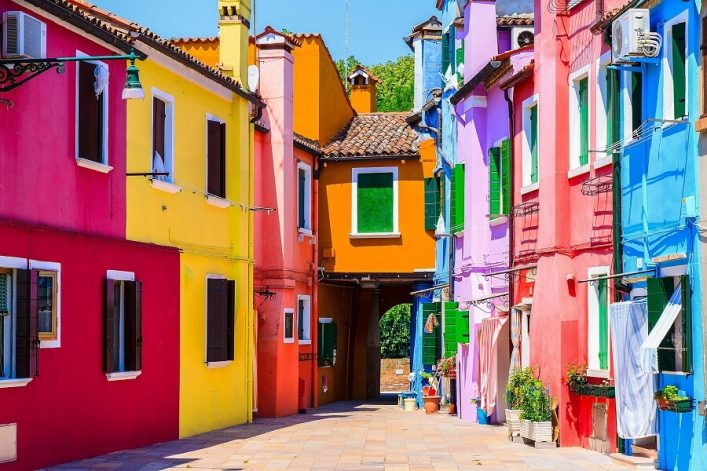
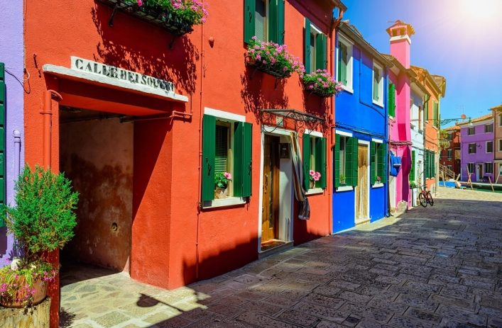

Burano liegt am anderen Ende der Lagune von Venedig und so dauert die Fahrt dorthin eine Weile. Eigentlich ist Burano übrigens ebenfalls nicht nur eine Insel. Burano besteht aus vier Inseln, welche durch acht Brücken miteinander verbunden sind. Burano fasziniert im ersten Moment mit seinen unglaublich bunten Häusern in allen Regenbogenfarben, die wirklich jedes Fotografenherz höher schlagen lassen. Ganz besonders schön ist die Insel im Frühling, wenn auch noch die Blumen vor den Häusern in sämtlichen bunten Farben erblühen und einen betörenden Geruch verbreiten. Wenn dazu die ersten Sonnenstrahlen die Nase kitzeln ist Burano einfach nur unglaublich.

Die bunten Fassaden sind das eine. Mindestens genauso bekannt ist Burano für seine wunderschönen Spitzenstickereien in der Reticella Technik, die Ende des 19. Jahrhundert durch die Spitzenschule, Scuola di Merletti, neu belebt wurde. Im Museo del Merletto kannst Du heute noch echte Burano-Spitzen bewundern. Die Läden in den Gassen Buranos verkaufen meist nicht die teure Burano-Spitze, sondern billige Ware aus Asien.
Der Legende nach haben die Fischer der Insel ihre Häuser so bunt gestrichen, weil sie so auch bei starkem Nebel oder nach einer durchzechten Nacht ihr Haus ausmachen konnten. Längst gibt es auf Burano praktisch keine Fischer mehr, doch die bunten Häuschen werden gehegt und gepflegt. Und übrigens soll noch einmal jemand sagen der schiefe Turm von Pisa sei schief, derjenige war noch nie auf Burano und hat noch nie den Campanile von San Martino gesehen. Das nenne ich mal schief!

Der Legende nach haben die Fischer der Insel ihre Häuser so bunt gestrichen, weil sie so auch bei starkem Nebel oder nach einer durchzechten Nacht ihr Haus ausmachen konnten. Längst gibt es auf Burano praktisch keine Fischer mehr, doch die bunten Häuschen werden gehegt und gepflegt. Und übrigens soll noch einmal jemand sagen der schiefe Turm von Pisa sei schief, derjenige war noch nie auf Burano und hat noch nie den Campanile von San Martino gesehen. Das nenne ich mal schief!